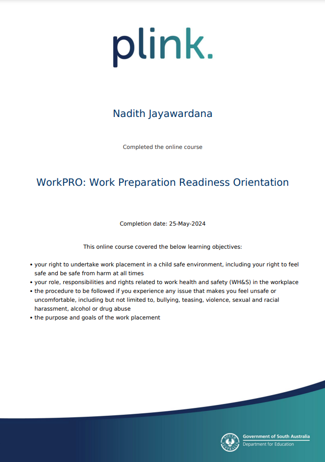

Resources
Safety glasses, Safety glasses are crucial for sites because we will never know when something such as a wood piece would come at our eyes. construction clothing (reflective clothing) are useful when we are working at night. , hearing protection are for places where we use machine that are very loud, safety boots (steel toe boots) are just as crucial as safety glasses because we will never know when something going to fall into our feet.
Research
By undertaking the workpro I have learned how to find a good work place with child safe environment, the rights to feel safe in the workplace, Understanding my responsibilities and rights. The ways of getting experience in right ways and how to learn. The purpose of work experience.
